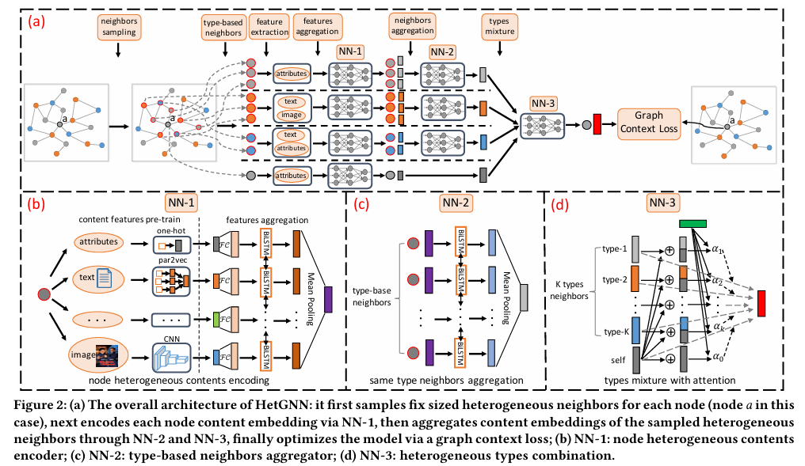
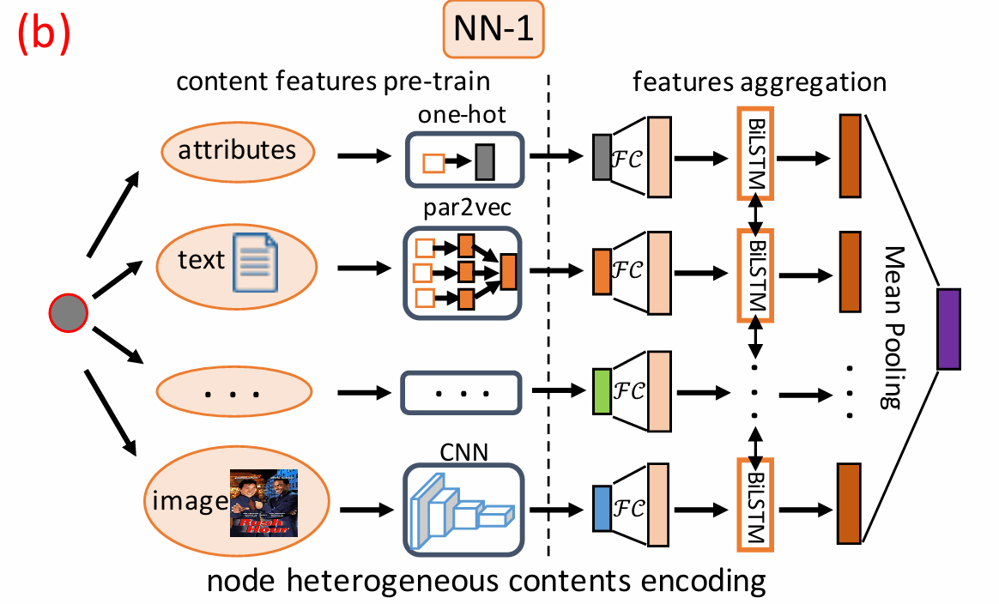
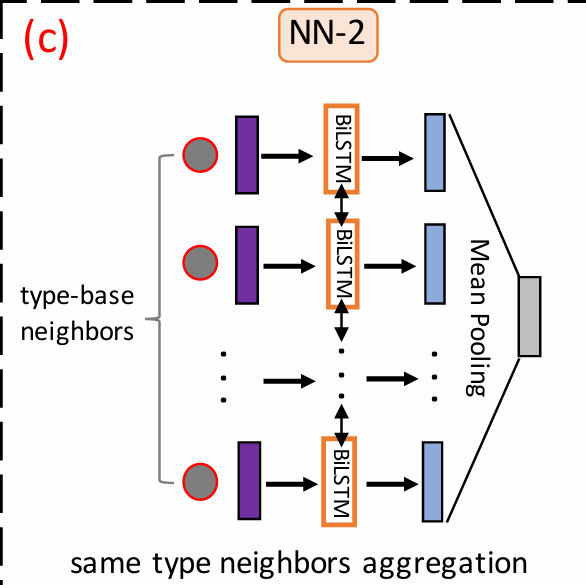

Heterogeneous Graph Neural Network
DOI:
publication: KDD 2019
Date of publication: 2019-07-25
- heterogeneous:
- graph structure heterogenerity
- node content heterogeneity (multimodal)
Definition
- content associated heterogeneous graph(C-HetG):$G=(V, E, O_V, R_E)$
- node type set: $O_V$
- edge type set: $R_E$
HetGNN

sampling heterogeneous neighbors
issues:
- hub node:
- “cold-start” node
step 1: sampling fixed lenght RWR
random walk from node $v$ -> travels to the neighbors of current node or returns to the starting node with a probability p.step 2: grouping neighbor types
for each node type, select top-k frequent nodethe t-type sampled neighbor set of $v$:$N_t(v)$
- feature:
- all type of neighbors
- fixed sample size
- type-based aggregation
encoding node heterogeneous contents

- content of node $v$: $C_v$
- embedding model $f_1$: $x_i \in \mathbb{R}^{d_f \times 1}$
depend on content type bi-directional LSTM(Bi-LSTM)
different BiLSTMs for different types of nodes
- same dimension d
aggregating heterogeneous neighbors
step 1: same type neighbors aggregation

$f_2^t(v) = \mathcal{AG}^t _{v’ \in N_t(v)} \left\{ f_1(v’) \right\}$- $\mathcal{AG}^t$: aggregator(FCNN/CNN/RNN) BiLSTM here
- unordered neighbors set
step 2: types combination
attention machanism: combine type-based neighbor embeddings & node $v$’s content embedding- different contributions for different neighbor types
formulating the objective and designing model training procedure
graph context loss:
- $v_c$: context node(neighbor of $c$) positive sample
- $v_{c’}$: negative sample
The embedding proximity of positively sampled nodes to c is maximized
Experiments
link prediction
a binary logistic classifier
Recommendation
personalized node recommendation: author-venue link
- preference score: the inner-product between embeddings of 2 nodes
Classification and Clustering
Hyper-parameters
- d: 128-256
- sampled size: 20-30(noise)
Code
to read